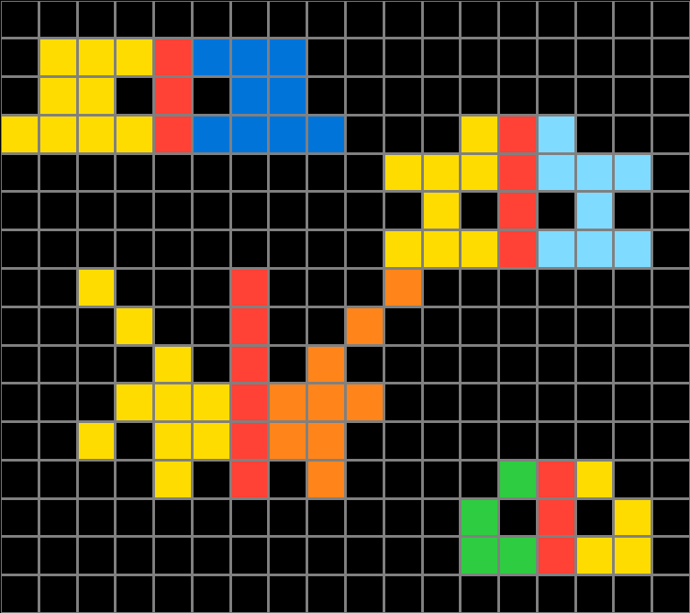
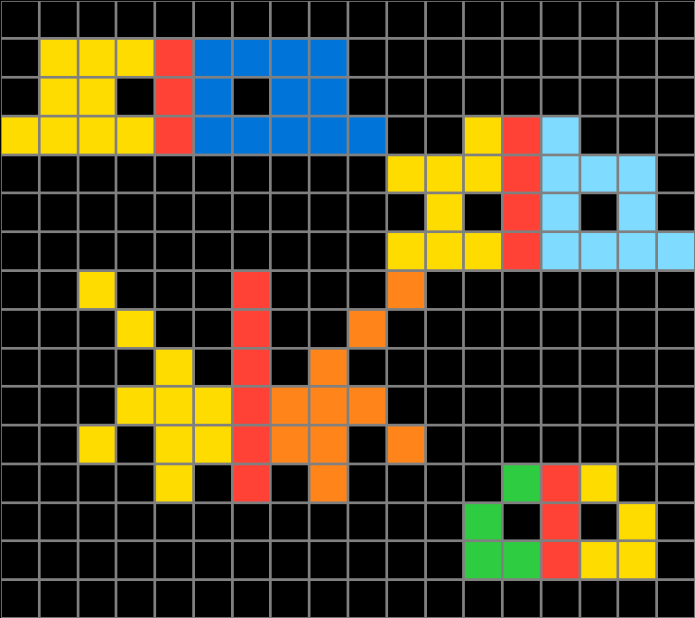
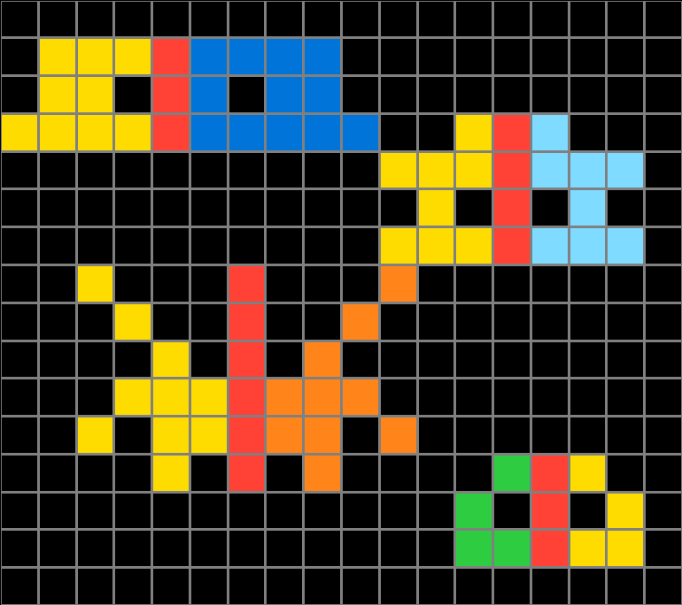
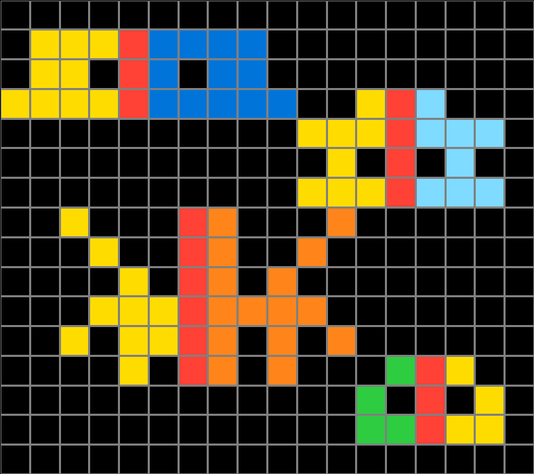
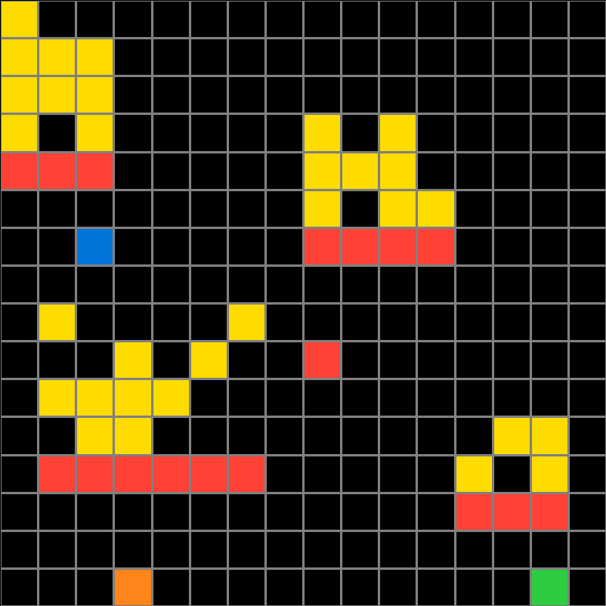
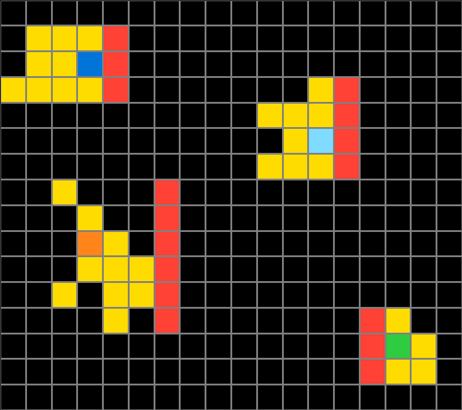
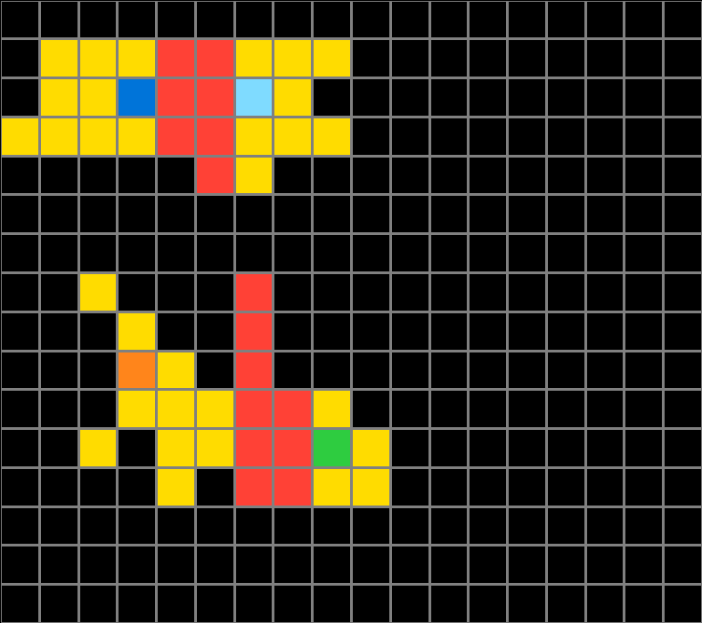
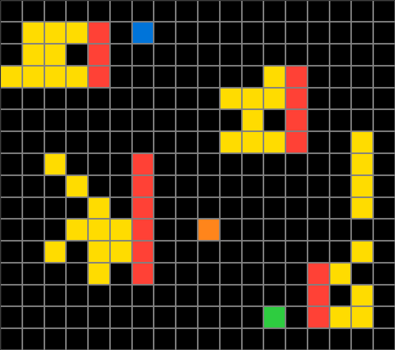
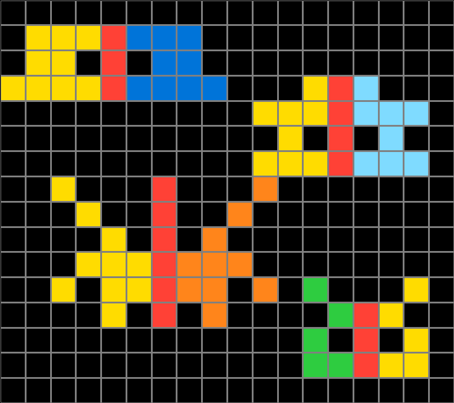
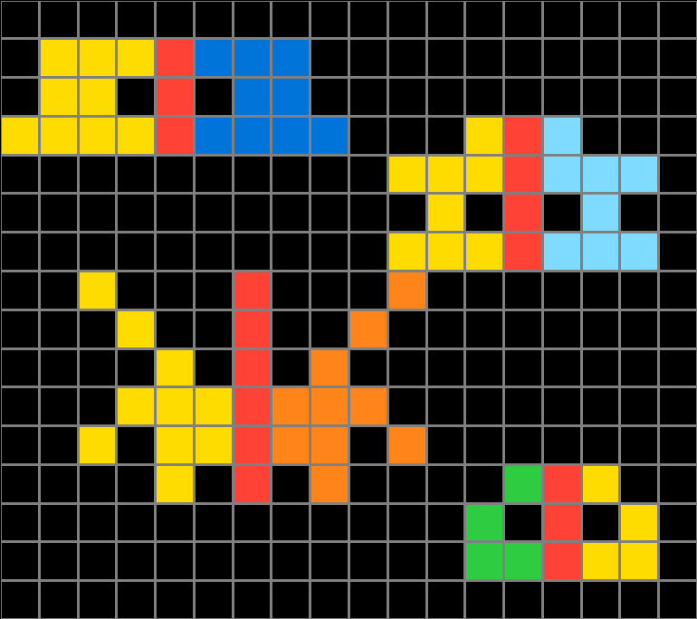

Participant 1
Initial description: I think the little dot indicates that you copy the yellow section across the meridian but in whatever color the dot is.
Final description: I think the little dot indicates that you copy the yellow section across the meridian but in whatever color the dot is.

Participant 2
Initial description: Duplicate all cells except cells that have all black in each of the 9 cells surrounding them. Then, using the vertical red cells as the middle of each figure, use the color of the corresponding "lone" cell to mirror each side of the red line with the other side
Final description: Duplicate all cells except cells that have all black in each of the 9 cells surrounding them. Then, using the vertical red cells as the middle of each figure, use the color of the corresponding "lone" cell to mirror each side of the red line with the other side

Participant 3
Initial description: Create a mirror of the blocks to the left of the red line by filling in the corresponding spaces on the right with the color of the single filled block.
Final description: Create a mirror of the blocks to the left of the red line by filling in the corresponding spaces on the right with the color of the single filled block.

Participant 4
Initial description: I mirrored what was shown on the test input
Final description: I mirrored what was shown on the first input


Participant 5
Initial description: Use the dot color to finish a symmetrical pattern with the bicolored pattern nearby.
Final description: I tried to create symmetrical patterns based off the single dot color, but perhaps I was making a mistake on where to make the symmetrical line.



Participant 6
Initial description: Create a symmetrical shape on the opposite side of the red line, using the color provided
Final description: Create a symmetrical shape on the opposite side of the red line, using the color provided

Participant 7
Initial description: Mirror the images so they are standing up but the suspended blocks are style in the same position.
Final description: After connecting the symbols I added the colored blocks in the empty spaces to fill the picture.



Participant 8
Initial description: The rule of the keyboard was to finish the second half of a pattern to create symmetry using the color dot left on the board.
Final description: The rule of the keyboard was to finish the second half of a pattern to create symmetry using the color dot left on the board.

Participant 9
Initial description: I thought it was to recreate the input but I just realized I messed up.
Final description: I looked at the task demonstration and determined the answer. I noticed that whatever single color block is beside each "shape" is what you need to focus on. If it is a light blue block, you have to copy what is beside it and recreate the shape. You basically just invert it with whatever color the single block is. I found that the easiest way was to copy the input first then finish the task.



Participant 10
Initial description: The input tells you the color and the rest is symmetry. The red line is your line to follow and you use the color given from the input to complete your output.
Final description: The input tells you the color and the rest is symmetry. The red line is your line to follow and you use the color given from the input to complete your output.

Participant 11
Initial description: The rule is to mirror replicate the yellow side in the color indicated by a dot on the opposite (mirror) side.
Final description: The rule is to mirror replicate the yellow side in the color indicated by a dot on the opposite (mirror) side.
